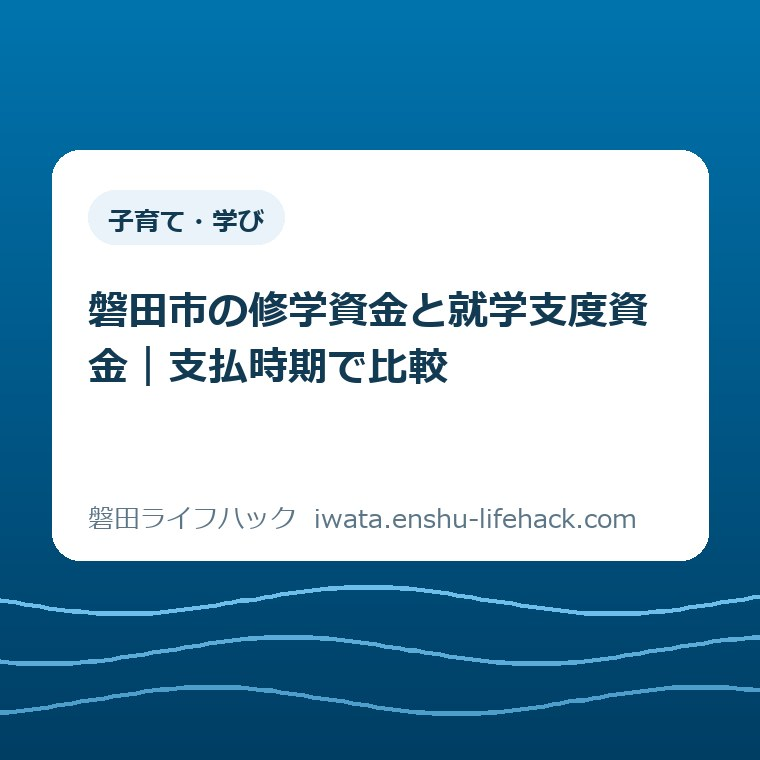

子育て・学び
磐田市の修学資金と就学支度資金｜支払時期で比較

この記事の要点
Q. 進学費用、修学資金と就学支度資金はどう使い分ける？
A. 修学資金は在学中の授業料など、就学支度資金は入学時の費用を支える県の貸付です。利用可否・金額は個別条件で変わります。県への書類提出期限は2026年11月20日で、市への相談はその前に必要です。学校の納付期限と貸付金の入金時期は別に確認します。今日は学校の納付期限を一つ確かめてください。
進学費用は、総額を調べるだけでもひと仕事
磐田市の修学資金と就学支度資金は、家庭の状況や進学先によって利用可否と金額が変わる貸付です。制度名だけで「うちは借りられる」とは決められません。この記事は、二つの資金を支払時期から比べるための整理です。個別の審査結果や入金日を約束するものではありません。
学校の案内を読み、入学金を調べ、毎月の生活費からいくら回せるか考える。ひとりで仕事と子育てを担いながら、この作業まで引き受ける負担は軽くありません。進学先が未確定なら、複数の学校の資料を見比べる手間もかかります。制度を調べ始めた時点で、すでに家族のために時間を使っています。
私は大石浩之（磐田市／不動産業）です。今回は、進学費用を「全部でいくら」という一つの数字にまとめず、支払う日で分けて考えます。入学までに必要な資金と、通い続けるための資金では、家計の備え方が変わるからです。ここでの家計の整理方法は私の提案です。
学校費用の制度や窓口を広く探す場合は、就学援助・学校費用の生活案内が入口になります。本記事では対象を広げず、母子・父子・寡婦福祉資金のうち、進学に関わる二つの資金と支払いの順番を見ます。就学援助と修学資金を、名前が似ているだけで同じ制度とは扱いません。
修学資金と就学支度資金の違いを比較
磐田市の「母子・父子・寡婦福祉資金」は、県の貸付制度を案内するページです。2026年9月9日に更新され、この記事では2026年10月1日に確認しました。県への申請にあたって最初の相談窓口になるのは、市こども未来課です。市が相談を受けることと、県が貸付を行うことを分けて読みます。
市公式ページでは、修学資金は扶養している子の修学に必要な経費、就学支度資金は入学・入所時に必要な経費として区分されています。在学中に学び続ける費用か、学校生活を始める時の費用か。この違いを先につかむと、学校から届く請求を相談するときの言葉が整理できます。
| 比較項目 | 修学資金 | 就学支度資金 |
|---|---|---|
| 費用の役割 | 修学を続けるための経費 | 入学・入所時の経費 |
| 市の説明資料の例 | 授業料・教材費・交通費など | 入学金・物品購入など |
| 説明資料の貸付方法 | 修学期間中に年4回 | 入学時に1回 |
| 学校に確かめること | 学期ごとなどの納付日と内訳 | 入学手続きに伴う納付期限と内訳 |
| 市に確かめること | 対象経費、貸付開始月、入金時期 | 対象経費、入学前の納付に間に合うか |
市の添付資料「貸し付けの申請について」は、修学資金の貸付方法を4月・7月・10月・1月の末日、年4回と説明しています。毎月かかる費用を支える資金でも、毎月振り込まれるという説明ではありません。就学支度資金は入学時に1回です。どちらも、各家庭の初回入金日は別に確認する必要があります。
私は、この貸付方法の違いこそ家計表に書き添えたいと考えます。「授業料のためのお金」とわかっても、学校の集金日に口座へ入っているとは限らないからです。在学中の支出を月ごとに並べる欄と、入金の予定を書く欄を分ければ、金額だけでは見えなかった空白に気づけます。

学校の納付日、県への提出期限、入金日は別
磐田市が案内する申請期限は、2026年11月20日（金曜日）です。市公式ページは、この日を県への書類提出期限と明記しています。11月20日に市へ初めて連絡すればよい、という意味ではありません。市への相談は、この期限に先立って行うよう案内されています。
期限を過ぎた場合の扱いも、二つの資金で書き分けられています。就学支度資金は貸付を受けられない場合があり、修学資金は貸付を受けられない月が生じる場合があります。「遅れたら全部が必ず不可」とも、「後からまとめて借りられる」とも読めません。判断は市の窓口に確認します。
学校の納付期限は、学校側が示す日付です。県への提出期限と同じ日であるとは限りません。たとえば学校の案内に入学手続き時の納付日が書かれていれば、その日付をそのまま相談時に伝えます。ここで架空の標準日を当てはめると、実際の学校の予定が見えなくなります。
貸付金の入金日は、家族の口座にお金が入る日です。県への申請が期限内にできることと、学校への支払いまでに入金されることは別の確認事項です。市の公開ページだけでは、個々の家庭の納付に間に合うかまではわかりません。入金予定が未確認なら、家計表も「未確認」として残します。
私は、カレンダーには三つの日付を混ぜずに書くことを勧めます。学校の納付日、県への提出期限、確認できた入金予定日です。市への相談や面接の予定は、その間をつなぐ段取りとして添えます。制度の締切だけに丸をつけても、学校への支払いの準備が終わったことにはなりません。

一枚の納付案内を、入学時と在学中に分ける
進学費用を相談する準備では、学校の納付案内にある費目と支払日を対応させます。入学金と授業料が同じ案内に載っていても、資金の対象として同じ扱いになると自己判断しないためです。以下は申請書式ではなく、窓口で説明するための私の整理案です。
最初の欄には「学校に書かれている費目」をそのまま写します。入学金、授業料、教材の代金など、まとめた名称しか書かれていなければ、その表記を残します。わからない内訳を推測して埋める必要はありません。資料のどこに書かれていたかが追える状態を優先します。
次の欄は「いつまでに支払うか」です。同じ学校でも、入学時の一括納付とその後の納付は別に書きます。支払時期がまだ公表されていない場合は、学校へ確認する項目として残します。期限を調べることと、借入額を決めることを一度に片付けようとしなくて構いません。
最後の欄を「市への確認」にします。「この費目はどちらの資金の対象になるか」「貸付が決まった場合、学校の納付日までに受け取れるか」と書けば、金額と時期を一緒に質問できます。費目の分類は家庭のメモでは仮置きにとどめ、対象範囲は窓口の説明で確かめます。
| 学校の案内 | 家庭で記録すること | 市に確認すること |
|---|---|---|
| 入学手続き時の納付 | 費目・金額・納付期限 | 就学支度資金などの対象範囲と入金時期 |
| 入学後の納付 | 各回の費目・金額・納付期限 | 修学資金の対象範囲と貸付開始月 |
| 他の支援の予定 | 制度名・決定済みか・入金予定 | 併用と金額調整の扱い |
家庭の収入についても、月額の表示と実際の振込日を分けます。児童手当の入金の考え方は、高校生年代までの児童手当の記事で整理しています。今ある手当をすべて進学費用に回せるとは限りません。食費や住居費に充てる分を残した上で、使える範囲を考えるのが私の提案です。
限度額、奨学金、返済も別々に確かめる
磐田市の資金案内は、家計の状況によって貸付できる金額が変わると説明しています。貸付限度額の一覧は、各家庭への確定通知ではありません。この記事では、学校種別や通学条件が未確定の読者に一つの上限額を示すことを避け、必要額と貸付可能額を分けて扱います。
私は、手元の資金、学校へ必要な金額、借入を検討する金額の三つを別の欄に置きたいと考えます。貸付の見込みだけで不足分を埋めた形にすると、審査後の金額が違ったときに予定を組み直すことになるからです。まだ決まっていない数字には「見込み」と書く。それだけで家族の受け止め方が変わります。
市の説明資料では、日本学生支援機構の貸与型奨学金との関係も二つの資金で異なります。修学資金は併用不可、就学支度資金は併用可と示されています。給付型奨学金や入学金・授業料減免には合計限度額による調整の説明があります。受けられる支援を、そのまますべて足せるとは考えない扱いです。
同資料は、限度額を超える場合の返還や停止・減額にも触れています。奨学金が申請中なら「まだ結果が出ていない」と伝え、結果が出た後の連絡方法も確かめます。給付、減免、貸付は家計への効き方が違います。ここでは個別の併用計算をせず、市へ制度名と決定状況を伝えるところまでを準備とします。
母子・父子・寡婦福祉資金は、返済を前提とする貸付です。市の説明資料にも、子どもとの話し合いと返済に関する記載があります。入学時だけを乗り切れるかで判断を終えず、返済開始の時期や返済額などの条件も説明を受けます。子どもが学びたい内容と、家庭の資金計画を切り離さずに考えたいところです。
学費と同時に日々の生活費も足りない場合は、借入額を増やす方向だけで整理しないのが私の考えです。生活費に困ったときの相談先も入口になります。進学費用の相談と生活全体の相談が必要かを、家庭の支出を見ながら確かめるためのリンクです。
良い点——費用の場面ごとに相談できる
磐田市の案内の良い点は、入学時と修学中の費用を分けて示し、市こども未来課を最初の窓口と明記していることです。私は、県の制度だからといって最初から県の窓口を探し直さなくてよい点を評価します。相談先の入口が一つわかるだけでも、調べ物の負担を減らせます。
県への期限であることと、期限後の扱いを明記している点も助かります。「締切があります」だけでは、学校の納付日と混同しやすいからです。就学支度資金と修学資金で影響の書き方を変えているので、どの支出について急いで相談する必要があるかを考える材料になります。
添付資料で貸付方法や奨学金との関係まで確認できることにも意味があります。対象経費だけでなく、入金と調整まで見えると、単に借りられるかという問いから一歩進めます。私は、家庭が学校の資料と並べて読める情報があることを、実際の準備を支える良さだと考えます。
注文したい点——借りられる額より先に困る日がある
磐田市の案内に私が注文したい点は、学校への納付期限と入金予定の照合を、本文でも目立つ形にしてほしいことです。貸付対象と申請期限がわかっても、家庭の切実な問いは「学校に払う日に間に合うか」です。制度の説明を、その問いに近づけてほしいと考えます。
窓口に事情を伝えなければ個別の入金日はわからない。それは当然としても、「納付期限のわかる資料を見ながら相談してください」という導線があると、電話の前に何を探せばよいかが見えます。これは担当者への非難ではなく、資料の順番についての私の要望です。
もう一つは、進学先や奨学金が未確定の段階で、何を伝えれば相談を始められるかの見せ方です。市の説明資料には進学希望先などを電話で聞く流れがあります。私は、その情報が案内の早い位置でも読めると、書類を全部そろえるまで動けないと思っている家庭の迷いを減らせると考えます。
対案・結論——今日は納付期限を一つ確認する
進学費用を考える家庭が2026年10月1日にできる一歩は、学校の納付期限を一つ確認することです。今日、二つの資金のどちらを借りるか決める必要はありません。募集要項や入学手続きの案内から、最初に支払いが必要になる日を一つ見つけます。不明なら、学校に尋ねる項目を一つ決めます。
期限が見つかったら、案内の費目と日付が同時に見えるよう保存します。紙なら該当箇所に印をつけ、電子資料ならページ番号をメモする程度で十分です。家族に説明するときも、記憶だけで日付を伝えるより、同じ案内を見られる状態のほうが行き違いを防げます。
市への相談では、「子どもの進学費用について、修学資金と就学支度資金を検討しています。学校の納付期限はこの日です」と伝える形を私は勧めます。金額や進学先に未確定な点があるなら、確定している点と分けて伝えます。わからない欄を埋めるために、数字を作る必要はありません。
市公式ページに載る窓口は、こども未来課給付グループです。所在地は磐田市国府台57-7、iプラザ（総合健康福祉会館）3階。電話は0538-37-4896、受付時間は午前8時30分から午後5時15分です。来庁の前に電話で相談する案内なので、仕事を休む日を先に決めるより、相談の進め方を確かめます。
市の説明資料には、来庁して説明を聞き、申請書類一式を受け取る段階の所要時間として1.5時間と記載されています。申請全体が90分で終わるという意味ではありません。面接などの段階もあるため、必要な日程は窓口に確認します。家庭側が確保する時間も、進学準備の負担の一部です。
大石の視点——制度があるだけでは支払いは済まない
進学費用について私はこう考えます。制度があるだけでは学校への支払いは済まない。家計では、借りられる額と同じくらい、支払う日に間に合うかが重い。制度の名前を覚えることより、家庭のカレンダーとつながることに意味があります。これは相談体験の紹介ではなく、家計と段取りを重く見る私の意見です。
私は、借りることで進学の選択肢を残せる点を大切にしたい一方、返済を含めてどの額が無理のない額なのかは、家庭の資料なしには判断できません。支援があると伝えるだけで安心してもらってよいのか、そこには迷いがあります。だから、確定していない入金を約束する書き方はしません。
今日の成果は、すべての費用の解決でなくてよい。学校の納付期限が一つわかれば、市に聞く内容を一つ具体的にできます。進路を考え、生活を回し、資料を探しているご家族に、さらに完璧な準備を求めたくありません。できた確認から相談につなげる順番でよいと私は考えます。
よくある質問
修学資金と就学支度資金は何が違いますか？
磐田市が案内する県の貸付では、修学資金は授業料など修学中の費用、就学支度資金は入学金など入学時の費用を支えます。市の説明資料では貸付方法も年4回と入学時1回に分かれます。学校の納付日と入金日は別です。個別の対象経費や利用条件は、市こども未来課へ確認してください。
2026年11月20日に市へ相談すれば間に合いますか？
2026年11月20日は県への書類提出期限です。磐田市は市への早めの相談を案内しているため、同日に初めて相談すれば間に合うとはいえません。期限後は就学支度資金を受けられない場合や、修学資金を受けられない月が生じる場合があります。必要な準備と日程を市に確認してください。
貸付限度額を、そのまま進学費用に見込めますか？
貸付限度額は、各家庭にその金額の貸付が決まったという意味ではありません。磐田市は家計状況によって貸付できる金額が変わると説明しています。奨学金や授業料減免との調整もあります。必要な費用、他の支援、学校の納付期限を伝え、金額と入金時期を個別に確認してください。
本記事は2026年10月1日に確認した公表情報をもとにした非公式の案内です。制度や期限は変更される場合があり、利用可否・金額・入金日は個別条件で変わります。最後は磐田市公式の母子・父子・寡婦福祉資金ページで最新情報を確認し、市こども未来課に個別の条件をご相談ください。
参考にした公式情報
- 母子・父子・寡婦福祉資金／磐田市（2026年9月9日更新、2026年10月1日確認）
- 貸し付けの申請について／磐田市掲載PDF（費用・貸付方法・奨学金との関係・申請の流れ。2026年10月1日確認）
最終確認日：2026-10-01 ／ 本記事は公表情報と執筆者の見解を分けて記載しています。制度・数値・公開状況は変更される場合があるため、最新情報は磐田市公式ページでご確認ください。